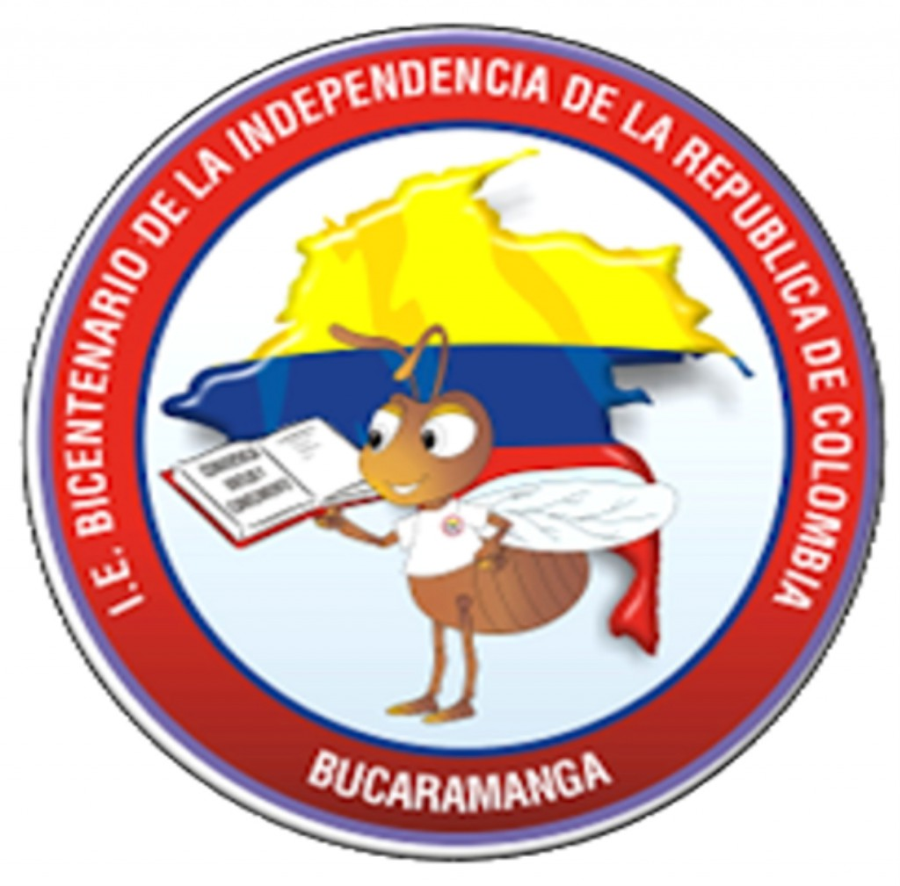
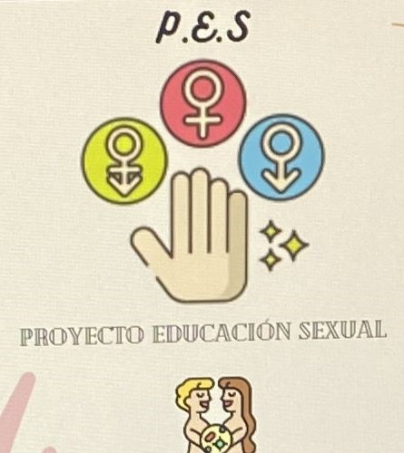

|  |
Proyecto Educación Sexual (P.E.S) |
 |
Jennifer Stefany Rodriguez Navarro
Nicol Reyes
Shirley Camacho
Docente : Susana Escobar Jerez
Colegio Bicentenario de la Idependencia
Informatica y tecnologia
Bucaramanga 2022
|
Video Explicativo
|
|
Información sobre el proyecto : |
|
La finalidad de este proyecto es de preparar a los estudiantes en el desarrollo de su sexualidad a través de sus relaciones familiares y sociales para tener una mejor comprensión de sí mismo y del otro. Al pasar del tiempo empezamos a vivir etapas nuevas en nuestra vida como la niñez, preadolescencia y adolescencia necesitan información precisa sobre su vida familiar, sexual y convivencial, lo cual le servirá de base para asimilar los procesos madurativos que le permitirán reconocer los cambios físicos y emocionales que presentan hasta llegar a la edad adulta. La educación q recibimos en nuestro entorno estudiantil son conceptos básicos que nos podrían ayudar a tener una mejor educación sexual, ya que se enfoca en hechos de gran importancia como la pubertad tanto en mujeres como en hombres, nos dan pautas para poder llegar a conocer nuestro propio cuerpo y asumir con normalidad el cambio físico asimilando positivamente nuestros caracteres sexuales que se van desarrollando y los diferentes comportamientos ayudándonos a interesarnos mas por el conocimiento y respeto hacia nuestro propio cuerpo y del sexo contrario. El tema que estamos tratando tiene mucho de q hablar ya q es un tema importante y vital para nuestra vida, pero aquí solo nos vamos a enfocar en tres actividades propuestas por los estudiantes para q el colegio se anime a poder ampliar los temas en el proyecto P.E.S que hace por periodo: La primera seria como aprender a reconocer mi historia personal, mi cuerpo y el de los demás. La segunda actividad propuesta seria la preadolescencia, ya q a través de este tema nosotros como estudiantes identificaríamos los cambios de niño adolescente, las características q conlleva este y como emplear estrategias para reconocer nuestra orientación sexual. Y para finalizar tendríamos el abuso sexual, como identificar si estoy siendo abusado, cuales serían las estrategias que reconozco para mi propio cuidado y protección personal y como asumir las actitudes de la sociedad respecto al tema. |
Actividades que ofrece la institucion :
Las actividades q ofrece la institución sobre el proyecto son charlas, talleres en grupo, y actividades que nos ayuden a interesarnos mas en el tema. Para mejor alternativa el colegio debería hacer charlas mas seguido para ayudar a sus estudiantes en temas como -no tener miedo de expresar sus emociones y sentimientos. -Decidir con libertad y responsabilidad cuándo iniciar las relaciones sexuales y con quién. -como evitar embarazos no deseados - infecciones de transmisión sexual. - Ayudar a que sus estudiantes
Charlas
La educación integral en sexualidad empodera a los jóvenes al mejorar sus capacidades de análisis, de comunicación y otras capacidades útiles para la vida con miras a garantizar la salud y el bienestar en términos de sexualidad, derechos humanos, valores, relaciones sanas y respetuosas, normas culturales y sociales, por eso deben ser intruidos y guiados por profesionales de la salud, que los orienten de la mejor manera a los jovenes que van a comenzar su vida sexual para que estos profesionales puedan dirigirse a ellos de una manera correcta intruyendolos e insentivando la importancia de la educacion sexual
Educacion sexual integral link de unescoTalleres
Para nadie es un secreto que el aprendizaje didactico es muy interactivo para los estudiantes y pueden aprender mas rapido sobre el tema relacionado, para eso fomentamos talleres didacticos para los estudiantes sobre la educación sexual, como pueden ser guías para conocer su cuerpo y lo que puede pasar si no se llegan a cuidar adecuadamente ni toman medidas adecuadas cuando empiezan una vida sexual activa
Evidencias
En las evidencias podemos apreciar las distintas charlas que tuvimos en el colegio presentando por los salones, el tema de educación sexual y la importancia que debe tener en nosotros los jovenes y como debemos llevarlo con responsabilidad para evitar complicaciones de diferentes indole